Local Guide
Things to Do
Lartington Hall sits on the edge of Teesdale, just outside the market town of Barnard Castle. If you are making a weekend of it, here are some ideas for filling the time, all within easy reach of the Hall.
Close to the Hall
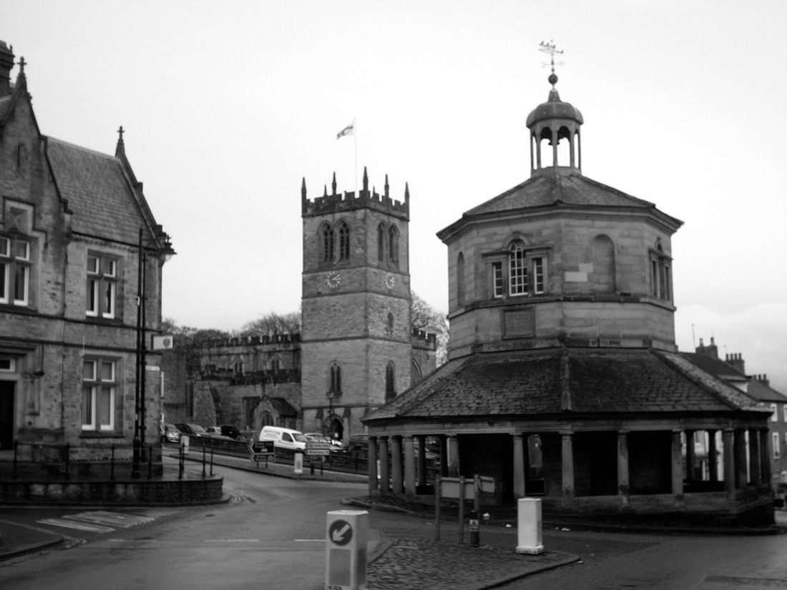
Barnard Castle2 to 3 miles from the HallThe market town the Hall looks to. Wander the streets, find the octagonal Market Cross, and take your pick of pubs, cafés and restaurants.
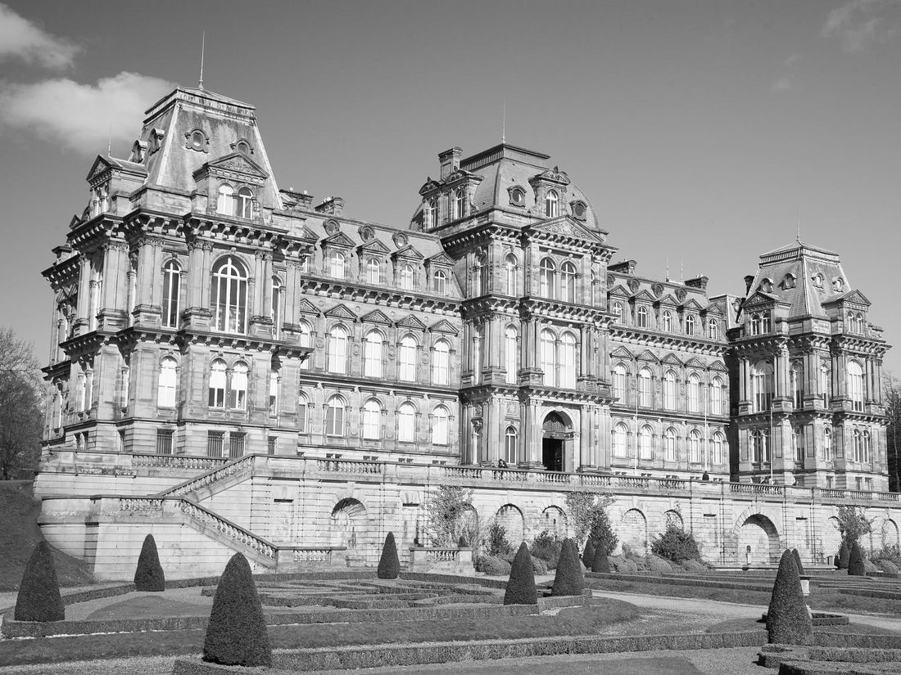
The Bowes MuseumIn Barnard CastleA magnificent French-style chateau, home to the famous Silver Swan, an eighteenth-century silver automaton.
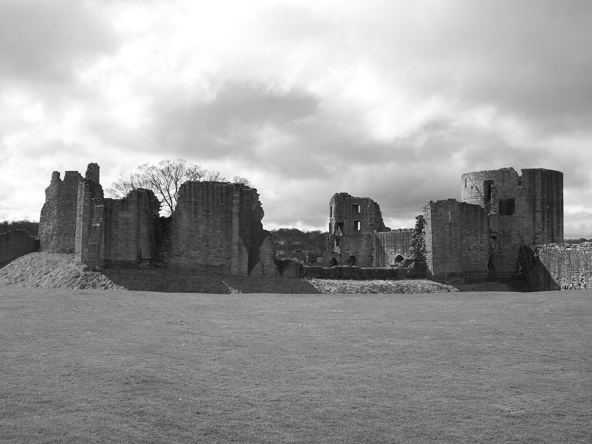
Barnard Castle RuinsIn Barnard CastleThe ruins of a twelfth-century castle stand high above the River Tees, looked after by English Heritage.
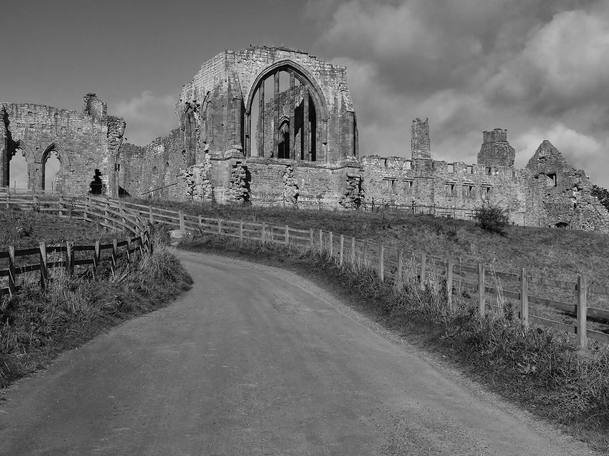
Egglestone AbbeyJust outside Barnard CastleThe peaceful ruins of a twelfth-century abbey in a wooded bend of the Tees. Free to visit.
Walks & Fresh Air
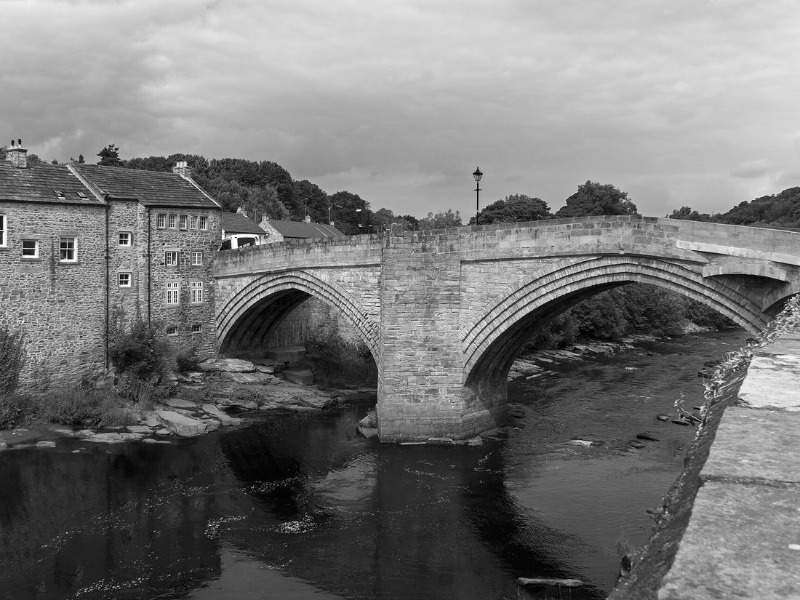
Along the River TeesFrom Barnard CastleA gentle riverside walk links the Bowes Museum with Egglestone Abbey, and the Teesdale Way makes a mostly flat circular route. Sensible shoes recommended.
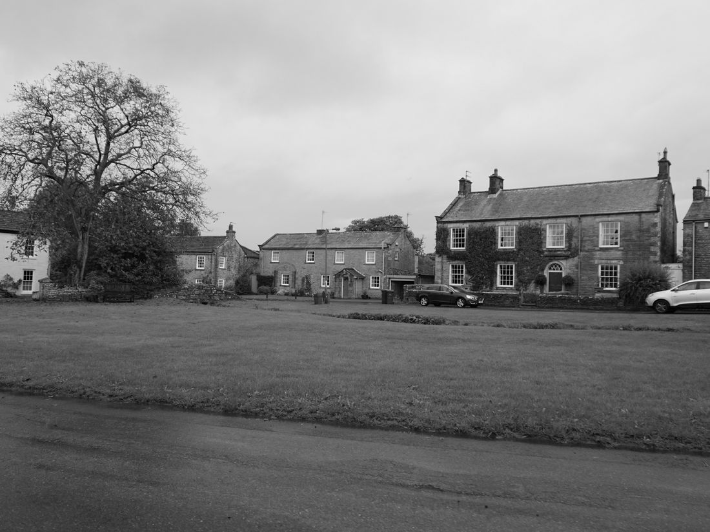
The VillagesWithin about 3 milesCotherstone, Romaldkirk, Bowes and Startforth are all close by, and make for a lovely countryside amble.
A Little Further Afield
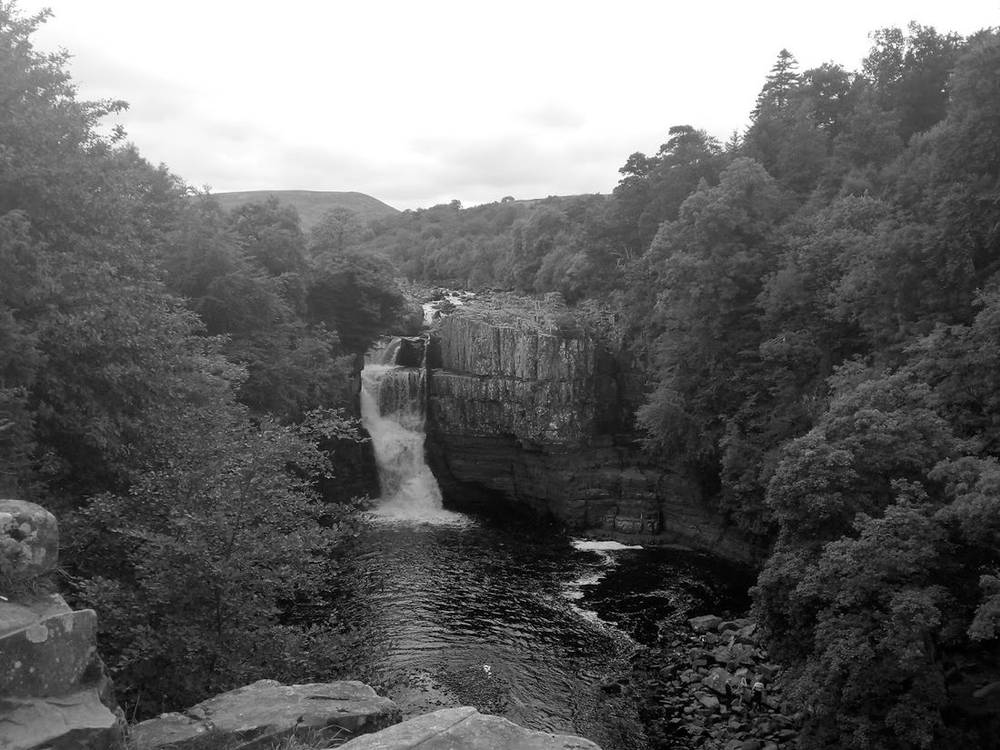
High Force & Low ForceAbout 15 miles from Barnard CastleSpectacular waterfalls on the River Tees in Upper Teesdale, with a circular walk of around five miles taking in both.
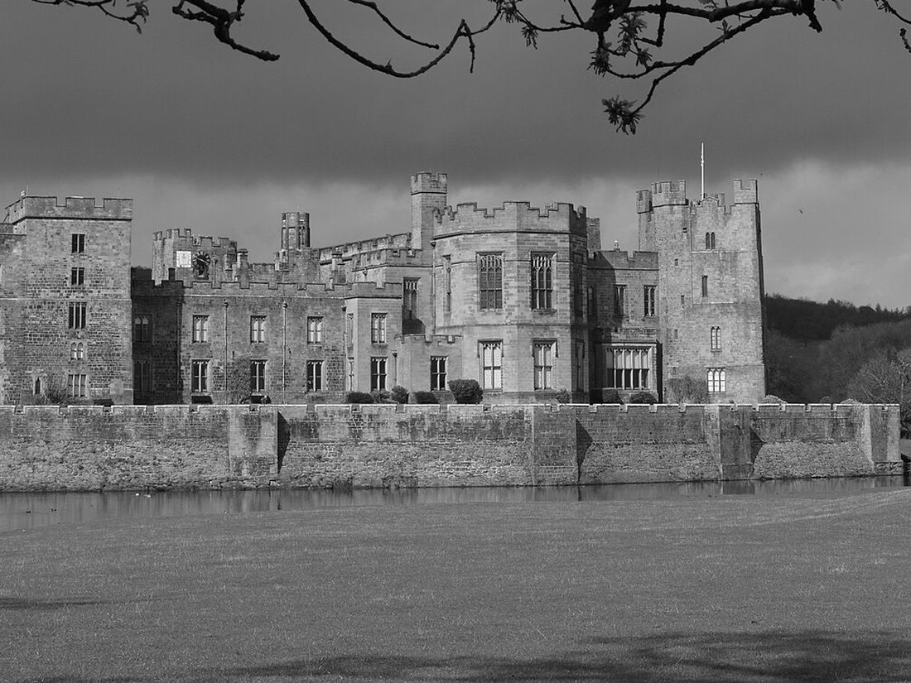
Raby CastleAbout 8 miles from Barnard CastleA medieval castle with walled gardens and a deer park, and still a family home. Please check opening arrangements first.
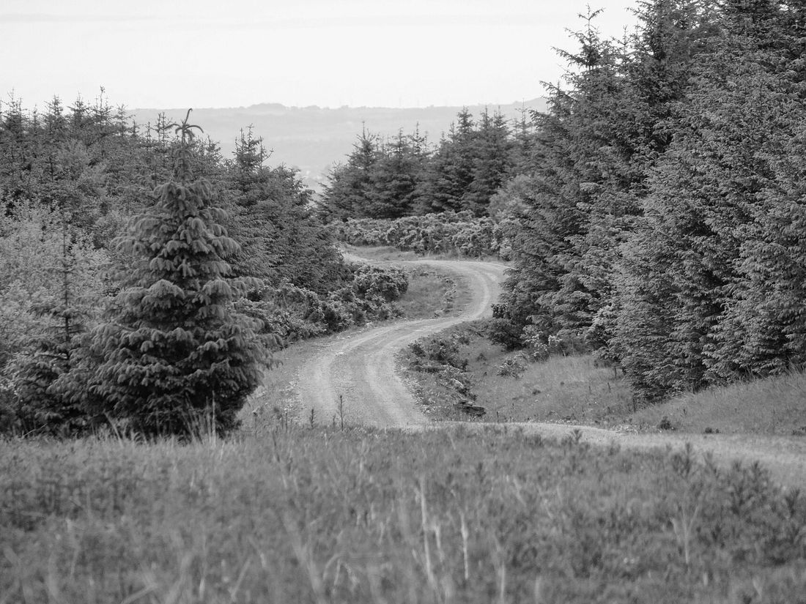
Hamsterley ForestAbout 10 miles from Barnard CastleWoodland trails for walking and mountain biking, if you fancy stretching your legs among the trees.
Eating & Drinking
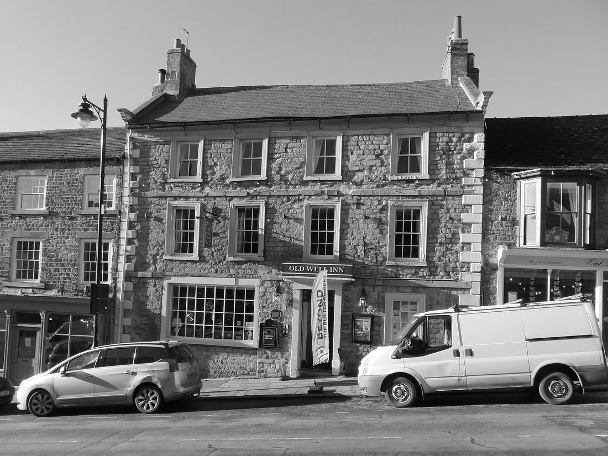
The Old Well InnBarnard CastleA seventeenth-century pub on The Bank, with cask ales and a beer garden.
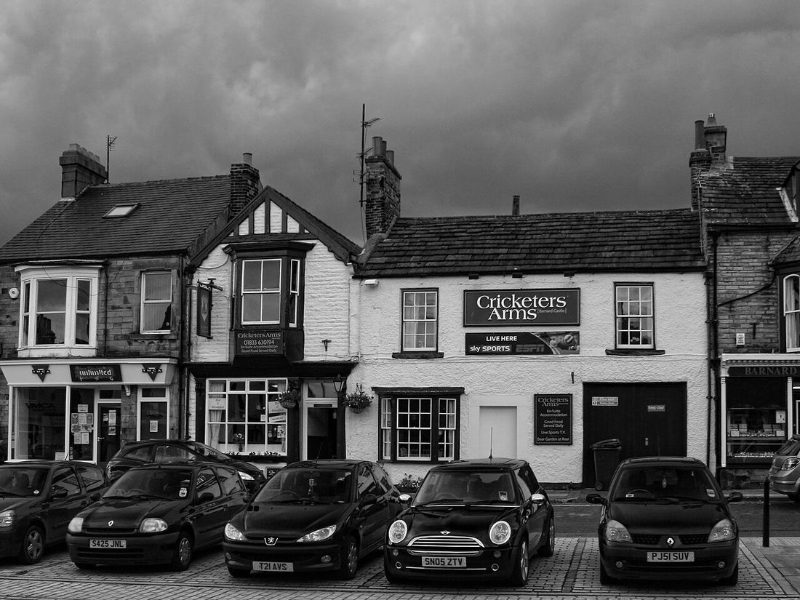
The Cricketers ArmsBarnard CastleA local on Galgate with a good range of real ale and live sport.
A characterful bar on Horse Market, with craft ales, a strong gin selection and a garden lounge.
A well-established chippy on Galgate and one of the most reviewed places in town.
The home of Teesdale Cheesemakers, so expect a cheese-led menu.
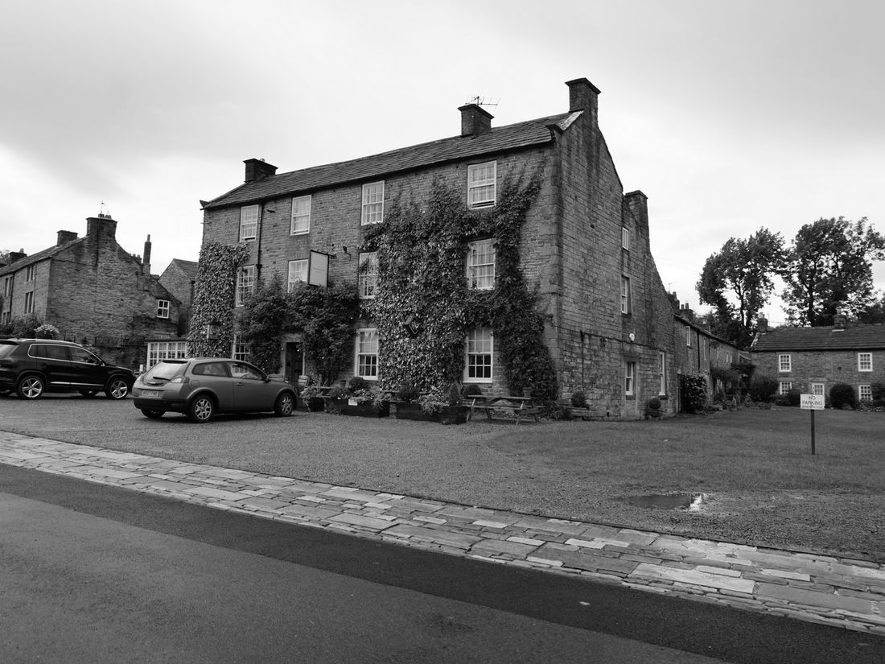
The Rose & CrownRomaldkirkAn eighteenth-century coaching inn on the village green, well known for its food.
Tap a card to visit its website.
Getting Around
Taxis are best pre-booked
Barnard Castle is the nearest town, so please book ahead, especially for the evening. Hodgsons Taxis, based in Barnard Castle, take private hire bookings.
01833 630730 hodgsonstaxis.comPhoto credits
Photographs from Wikimedia Commons, shown here in black and white and cropped to fit.
- Barnard Castle: “Barnard Castle Market Cross - panoramio” by Keith Ruffles, CC BY 3.0
- The Bowes Museum: “Bowes Museum” by Alden Chadwick, CC BY 2.0
- Barnard Castle Ruins: “Barnard Castle ruins, 2010” by Nick Bramhall from Aberdeen, UK, CC BY-SA 2.0
- Egglestone Abbey: “Egglestone Abbey - geograph.org.uk - 3120737” by Peter McDermott, CC BY-SA 2.0
- Along the River Tees: “County Bridge over the River Tees at Barnard Castle - geograph.org.uk - 2490529” by Ian Greig, CC BY-SA 2.0
- The Villages: “Houses in Cotherstone - geograph.org.uk - 4700024” by Ian S, CC BY-SA 2.0
- High Force & Low Force: “High Force waterfall on a grey day” by RachelEP, CC0
- Raby Castle: “Raby Castle - geograph.org.uk - 4459776” by Tony Simms, CC BY-SA 2.0
- Hamsterley Forest: “Hamsterley Forest - geograph.org.uk - 1911193” by Peter McDermott, CC BY-SA 2.0
- The Old Well Inn: “The Old Well, Barnard Castle - geograph.org.uk - 7075466” by Gordon Hatton, CC BY-SA 2.0
- The Cricketers Arms: “Cricketers Arms - geograph.org.uk - 2583294” by Peter McDermott, CC BY-SA 2.0
- The Rose & Crown: “Rose ^ Crown, Romaldkirk - geograph.org.uk - 4701038” by Ian S, CC BY-SA 2.0